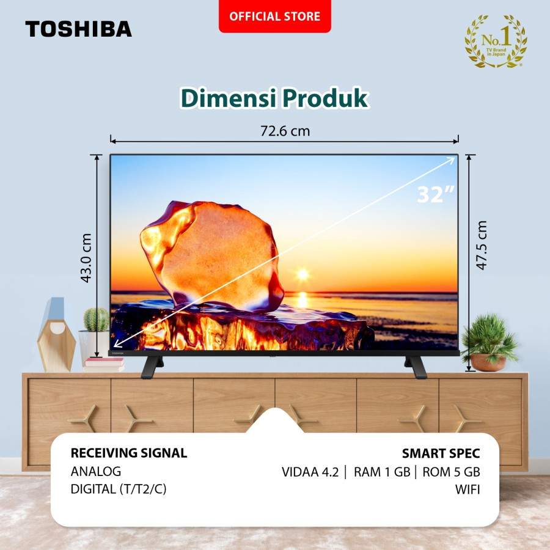
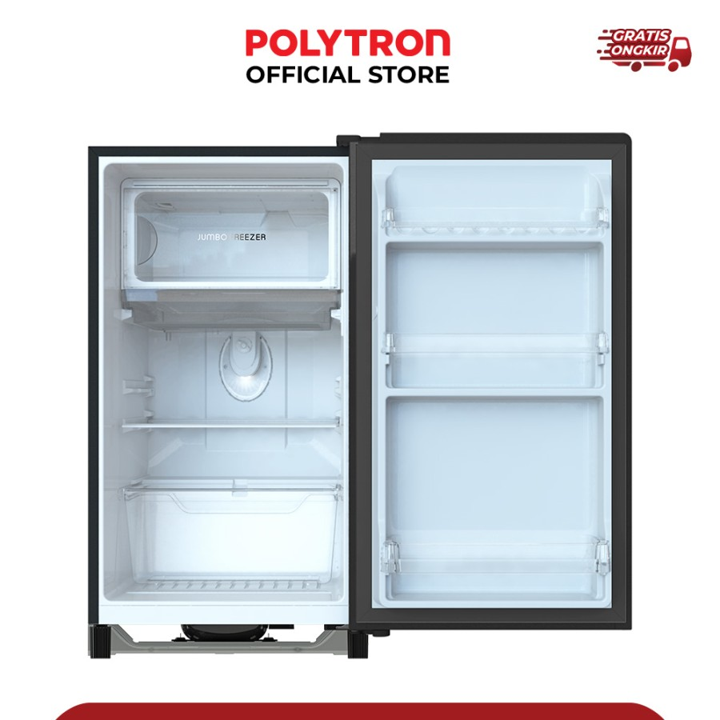
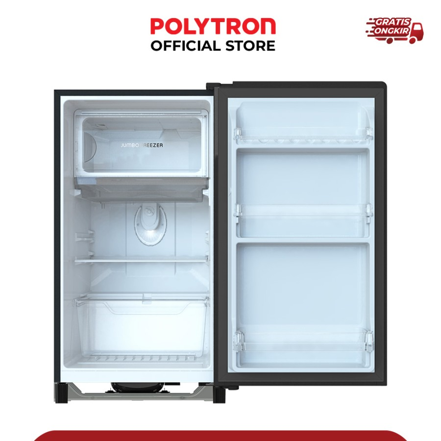
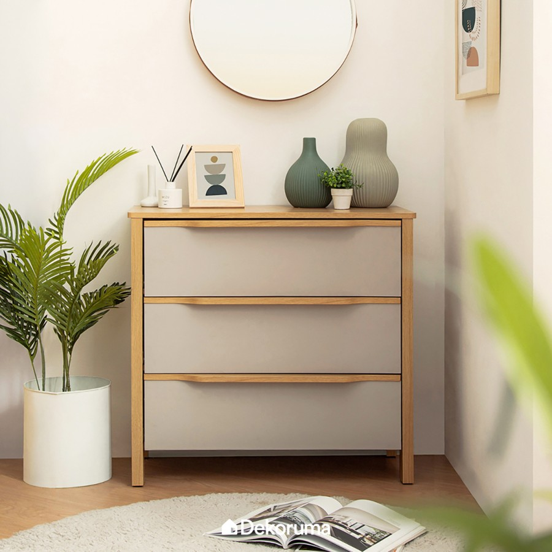

Produk Pakaian
BEVERLY HILLS POLO CLUB Shirt Men BVM24088 - Navy, S
Rp. 98.000
Rp. 148.000


Terinspirasi dari era kejayaan Beverly Hills, setiap potongan dalam koleksi ini membawa nuansa kemewahan yang abadi. Didesain dengan detail yang elegan, koleksi ini menghadirkan keseimbangan sempurna antara tradisi dan modernitas.
Height (H) – Width (W)
Catatan: Diukur secara manual dengan toleransi ukuran sebesar ± 2 cm
Article Details
- Shirt
- Short
- Sleeve
- Regular Fit
- Logo Stiching
- Machine Wash
Sebagai Pengigat
Kami hanya mengirimkan produk dengan ukuran dan jumlah sesuai pesanan pelanggan. Demi menjaga eksklusivitas dan kualitas, setiap pembelian bersifat final—tidak dapat dikembalikan, ditukar, atau direfund.
Kami menghargai perhatian terhadap detail sebelum melakukan pembelian. Jika terdapat kendala, harap sertakan video unboxing saat pertama kali menerima produk agar kami dapat meninjau permintaan Anda dengan baik.
Terima kasih atas kepercayaan Anda dalam memilih koleksi kami.
BEVERLY HILLS POLO CLUB Shirt Men BVM24088 - Red, S
Rp. 111.000
Rp. 210.000


Terinspirasi dari era kejayaan Beverly Hills, setiap potongan dalam koleksi ini membawa nuansa kemewahan yang abadi. Didesain dengan detail yang elegan, koleksi ini menghadirkan keseimbangan sempurna antara tradisi dan modernitas.
Height (H) – Width (W)
Catatan: Diukur secara manual dengan toleransi ukuran sebesar ± 2 cm
Article Details
- Shirt
- Short
- Sleeve
- Regular Fit
- Logo Stiching
- Machine Wash
Sebagai Pengigat
Kami hanya mengirimkan produk dengan ukuran dan jumlah sesuai pesanan pelanggan. Demi menjaga eksklusivitas dan kualitas, setiap pembelian bersifat final—tidak dapat dikembalikan, ditukar, atau direfund.
Kami menghargai perhatian terhadap detail sebelum melakukan pembelian. Jika terdapat kendala, harap sertakan video unboxing saat pertama kali menerima produk agar kami dapat meninjau permintaan Anda dengan baik.
Terima kasih atas kepercayaan Anda dalam memilih koleksi kami.
Produk Elektronik
Toshiba LED TV - HD Smart TV 32" - 32E31KP
Rp. 4.500.000
Rp. 5.500.000



Hadir dengan sistem operasi VIDAA U4.2, 32-E31KP menghadirkan teknologi yang nyaman, mudah, cepat, aman, dan terjangkau. Nikmati pula pengalaman menonton super menyenangkan dengan REGZA Engine HG dan Digital Noise Reduction.
Picture Display
- REGZA Engine HG
- Display Technology
- HD Ready
- Essential PQ Technology
- Digital Noise Reduction
- Color Re-master
- Picture Optimizer
- Contrast Booster
- Football Mode
- Panel Type: VA - Soft Panel
- Refresh Rate: 60Hz
Sound Technology
- REGZA Power Audio
- Dolby Audio
- DTS HD
- Main Speakers: 8 watt x 2
Note
Rekam video unboxing saat barang telah sampai dan centang bagian asuransi untuk klaim asuransi saat mengalami kerusakan
POLYTRON Kulkas 1 Pintu Beauty metal door 150 liter PRB 159 - Biru
Rp. 2.235.000
Rp. 3.333.333
 


Kulkas 1 pintu dengan desain metal door elegan di pintunya dengan sedikit aksen printing bunga. Kapasitas 150 liter. Dilengkapi freezer jumbo dan rak tempered glass yang dapat diatur.
Fitur
- Kulkas 1 Pintu
- Kapasitas 150 Liter
- Metal Door
- Jumbo Freezer
- Tempered Glass Rack
- Perfect Door Sealed
- Direct Cooling
Produk Furniture
Dekoruma MITSU Lemari Laci Minimalis 3 Pintu | Kabinet Kayu
Rp. 1.000.000
Rp. 4.000.000


GRATIS ONGKIR JABODETABEK. Lemari kayu 3 pintu minimalis, cocok untuk berbagai ruangan.
Spesifikasi
- Brand: Heim Studio
- Warna: Cokelat
- Material utama: MDF
- Ukuran produk: 80.3cm x 40cm x 75.5cm
- Ukuran kemasan: 89.5cm x 44.5cm x 18cm
- Berat produk: 41.5kg
Catatan
- Stok update sesuai etalase
- Produk dikirim flatpack, bisa pesan perakitan
- Garansi 14 hari (WAJIB video unboxing)
- Info lebih lanjut: dkr.ma/garansi-retail
Meja Makan Kayu Set, 6 Kursi Paten Sandaran Busa Melamin
Rp. 12.000.000
Rp. 19.000.000


Set meja makan berbahan kayu lengkap dengan 6 kursi. Dudukan diberi jok dan sandaran busa.
Dimensi Kursi
- Tinggi : 110 cm
- Lebar dudukan 45cm
- Panjang 50 cm
Dimensi Meja : 160 x 90 x 80 cm
Spesifikasi Produk :
- Bahan: Kayu pinus
- Jok: Busa rebonded + busa super
- Finishing: Cat melamin
- Kain & warna bisa custom
- Kaca meja 5mm